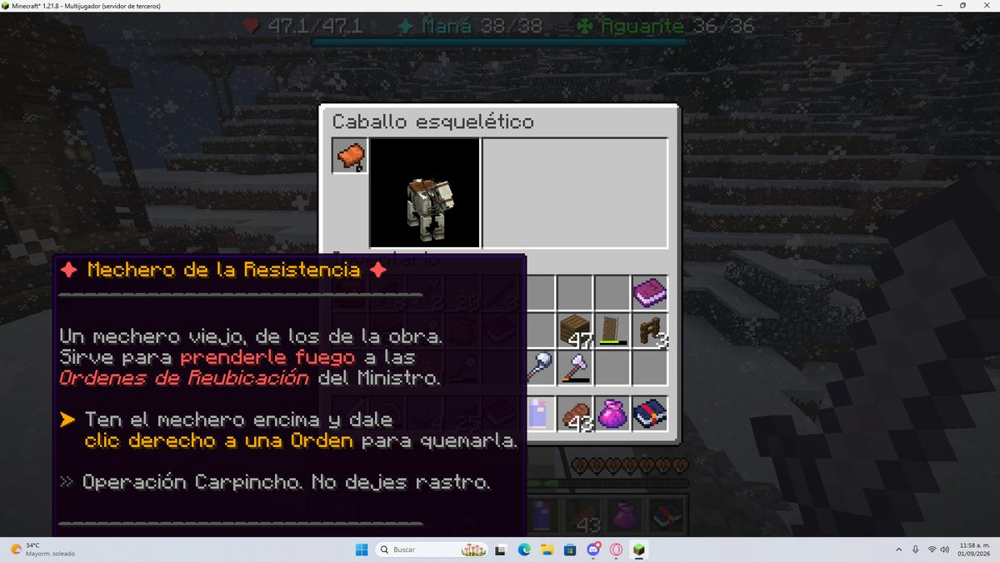
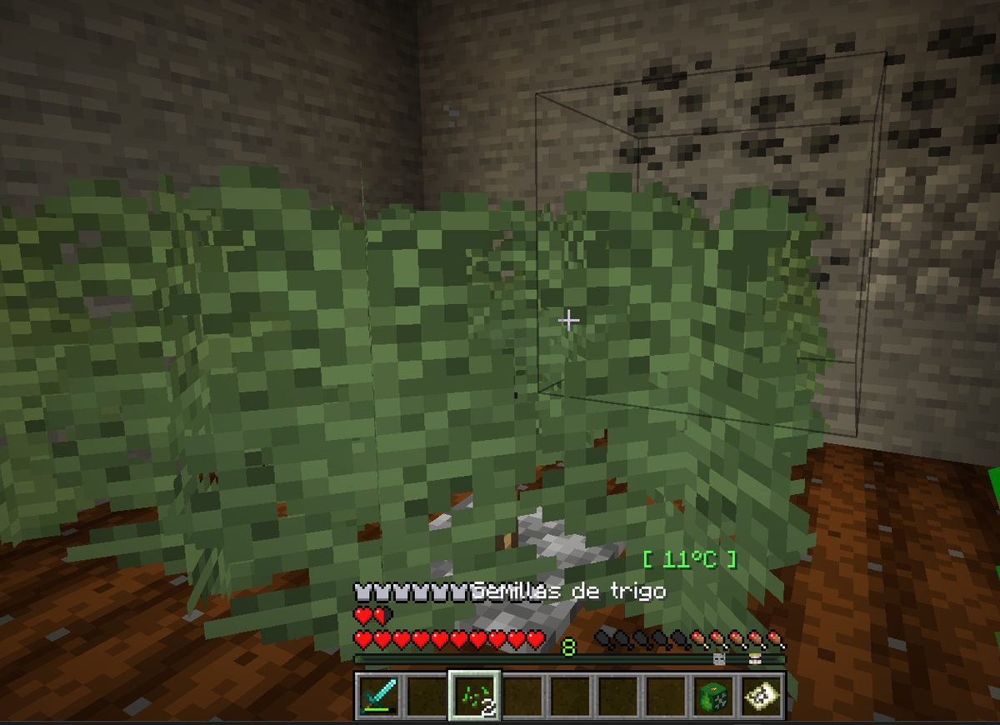
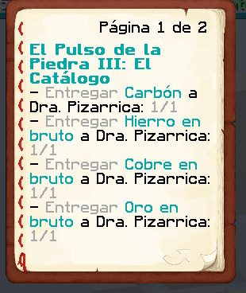

Boletín Oficial del Ayuntamiento del Reino · Se informa, no se alarma
EL HERALDO DEL REINO
Número 111 de septiembre de 2026Tarde del martes 1 de septiembre a la mañana del miércoles 2
SE PASÓ DOS HORAS SIN PODER ENTRAR AL REINO Y AMANECIÓ SIENDO SU PRIMERA CAUSA DE MUERTE
El único vecino dado de alta en toda la jornada, Webis2009, estuvo desde las cuatro de la tarde peleándose con el censo porque su nombre ya lo tenía otro. Entró a las 18:32. Dieciséis horas después, entre las 10:55 y las 10:58, causó nueve defunciones en tres minutos, todas del mismo vecino y ninguna de ellas comentada por nadie. El Reino cerró la jornada un minuto más tarde.
Redactado por la Oficina de Prensa del Ayuntamiento
Bando
El Ayuntamiento del Reino recuerda al vecindario que los encargos vienen con las
instrucciones puestas. Vienen en el papel que se entrega al aceptarlos, vienen repetidas
en el objeto que se da para cumplirlos, y vienen otra vez en el Pliego de Encargos que cada
vecino lleva encima. Son tres sitios. Esta corporación no ha encontrado la manera de poner un
cuarto.
Se hace constar que en la jornada de ayer cuatro vecinos preguntaron en voz alta por
algo que tenían escrito delante: qué era una Orden, qué era la Faena, qué era
una Perla Negra y dónde estaba el siguiente encargo. En uno de los casos —del que esta
Oficina publica hoy la fotografía, en la sección de Servicios— la respuesta estaba
en la misma pantalla en que se hacía la pregunta, en letra grande y con una flecha
amarilla señalándola.
El Ministerio de Construcciones lo resumió a las 18:57 con una economía que esta Oficina
envidia y no puede permitirse: «si no leéis las misiones, normal». Queda dicho.
Léanse los encargos. Y quien tras leerlos siga sin entenderlos, que lo diga: para eso
está la ventanilla, y para eso está este papel.
Léase
PORTADA
Nueve defunciones en tres minutos, y nadie dijo una palabra
A las 16:28 de la tarde del martes, un vecino que todavía no era vecino escribió
en el grupo del pueblo que no conseguía entrar. A las 18:12 seguía fuera. A las
18:30 —dos horas y dos minutos después— comunicó que lo había resuelto él solo, y
explicó el motivo: el nombre que había elegido ya lo tenía otro. Preguntado por cuál
era, contestó lo único que ha contestado en toda la jornada sobre el asunto:
«nadie debe saber».
El censo lo admitió a las 18:32. Fue el único alta de la jornada, y esta
Oficina hace constar que no la tramitó esta administración: la tramitó él, contra el
criterio del propio registro, después de dos horas de intentos y de haber consultado por su
cuenta el archivo general de reinos.
Lo que ocurrió dieciséis horas más tarde consta en el Registro de Defunciones y esta
Oficina se limita a copiarlo. Entre las 10:55 y las 10:58 de la mañana del
miércoles, el vecino recién inscrito causó nueve defunciones. Las nueve fueron del
mismo vecino, kum4shiro, que a las 10:18 le había escrito por el canal común
«webi metete al grupo». Se metió.
El detalle que este Negociado considera de interés general no es el número: es
el silencio. En los tres minutos que duró el episodio, con nueve defunciones
consecutivas, no se pronunció una sola palabra en la plaza. Ni una queja, ni una
protesta, ni un aviso. La última frase registrada en el Reino es de otro vecino, a las
10:38, ofreciendo diamantes. Después de eso, nueve defunciones y nada.
El Reino cerró la jornada a las 10:59, un minuto después de la última. Esta
corporación no ha recibido reclamación de ninguna de las dos partes y no la espera.
SUCESOS
Quince defunciones en una jornada: el itinerario completo
Antes de que le ocurriera lo de la mañana, kum4shiro ya llevaba una jornada
notable, y esta Oficina la reproduce entera porque tiene una forma que se explica sola:
08:31, caída desde altura. 08:41, descubrió que el suelo era lava.
09:38, El del Cono. 10:17, la Bicha del granero. 10:38, ahogamiento.
10:45, volvió a descubrir que el suelo era lava. Y a partir de las 10:55, lo
que ya consta en portada.
Son quince defunciones en una sola jornada, la cifra más alta que ha registrado
este Ayuntamiento desde que lleva la cuenta, y casi la mitad de las treinta y dos
que hubo en todo el Reino. Este Negociado destaca en particular el segundo hallazgo de la
lava, cuatro minutos antes de las once y dos horas después del primero: la Oficina de
Estadística lo ha clasificado como «confirmación» y no como repetición, porque a
efectos administrativos el vecino no cometió dos veces el mismo error — verificó el
primero.
A las 09:59, en medio de todo lo anterior, el mismo vecino preguntó por el canal
común, en mayúsculas: «CHE LETAY, qué es faena». Este Ayuntamiento lo consigna sin
comentario en esta sección, porque ya lleva su comentario en el bando de portada.
SUCESOS
El ladrón de burros llevaba capa, traje de látex y dejó un pedazo de pan
A las 15:18 de la tarde se cursó denuncia contra una vecina por sustracción de
équidos. A las 20:40, un testigo la desmintió y aportó una descripción que este
Negociado transcribe literalmente porque no se atreve a resumirla: el autor
«tenía una capa y como un traje de látex», y el testigo concluyó que
«o era un súper héroe o un pervertido, a lo mejor los dos».
Lo único que el sospechoso dejó en el lugar fue, según la denuncia, un pedazo de
pan. Otro vecino hizo notar acto seguido que «el único archivo que existe de ese tal
hombre pan es un reportaje de hace años», y un tercero sostuvo que la figura
«solo viene en momentos de necesidad».
Esta corporación ha revisado su archivo y confirma la existencia del reportaje. No
confirma nada más. El expediente queda abierto bajo el epígrafe «sustracción de équidos
con indumentaria», que se estrena hoy.
ANOMALÍAS
Dos vecinos se cayeron fuera del mundo en el mismo minuto
A las 22:37 del martes, TitanWarhammer y el Ministro Pan causaron
baja simultánea por la misma vía: se cayeron fuera del mundo. No consta que
estuvieran juntos, no consta que fuera la misma caída y consta que fue el mismo minuto.
Dieciocho minutos antes, a las 22:19, el propio Ministerio había comunicado al
vecindario que el Reino se detenía y que volvería enseguida. Volvió a las 22:21.
Esta Oficina clasifica el conjunto como temblor registrado en el subsuelo, lo
incorpora al expediente de los pulsos de la Torre —que va por su undécima jornada— y
recuerda que la postura oficial no ha cambiado: es rutinario y no reviste gravedad.
Se hace constar, para el expediente, que en las horas anteriores el subsuelo estuvo
especialmente movido: los temblores se registraron con una regularidad que este
Negociado califica de «laboriosa». Desde la revisión de esta mañana no se ha vuelto a
anotar ninguno, si bien la revisión lleva puesta trece minutos y esta corporación no
considera prudente sacar conclusiones de trece minutos.
SERVICIOS
La respuesta estaba en la pantalla, en letra grande y con una flecha

La fotografía que el propio vecino adjuntó a su consulta. En el centro, el objeto que se le había entregado para el encargo: dice para qué sirve, dice qué hay que quemar y dice cómo —clic derecho a una Orden—, con una flecha amarilla delante. La consulta era qué era una Orden.
Archivo Municipal · pase el ratón para revelarla
A las 18:53 del martes, un vecino planteó por escrito una duda sobre su encargo:
«no entiendo a qué se refiere con orden». Adjuntó fotografía de su pantalla. Esta
Oficina la publica sin recortar.
En el centro de esa fotografía está el objeto que el propio Reino le había entregado
para el encargo, y en él, en letra grande, morada y con una flecha amarilla, consta:
sirve para prenderle fuego a las Órdenes de Reubicación del Ministro, y
«ten el mechero encima y dale clic derecho a una Orden para quemarla». Cuatro
renglones más abajo consta incluso el nombre de la operación.
El Ministerio de Construcciones contestó a las 18:57 —«tienes que quemar
Órdenes. Papeles»— y añadió el diagnóstico general que ha originado el bando de hoy.
A las 19:02, el vecino cerró el asunto con una frase que esta corporación reproduce
con afecto y sin corregir: «no sé leer, grax grax grax».
Este Ayuntamiento hace notar que el vecino preguntó, entendió y dio las gracias en
nueve minutos, que es más de lo que consigue esta administración en un trimestre, y
que de los cuatro casos de la jornada es el único que se dio cuenta solo.
SERVICIOS
La cosecha que daba semillas de trigo, y la mano que la estaba arrancando

La plantación de la denuncia, fotografiada por el propio denunciante. Al fondo, lo que llevaba en la mano después de recogerla: semillas de trigo.
Archivo Municipal · pase el ratón para revelarla
A las 06:50 de la mañana, un vecino comunicó que su plantación
«no está dando el cannabis para secarlo, en cambio da semillas de trigo o bien no da
nada», y aportó fotografía.
La Inspección Agraria ha examinado el caso y determina que la plantación estaba
bien y el vecino también: lo que no estaba escrito en ninguna parte con la claridad
debida es que estas plantas se recogen con la mano y no con la herramienta. Quien
las pica las pierde, y hasta esta mañana las perdía en silencio, sin un aviso, sin
un mensaje y sin que constara en ningún registro. Cuatro horas de cultivo por planta.
Queda corregido en los dos sitios: el recetario lo dice ahora con todas las letras y
el Reino ya no deja arrancarlas — quien lo intente recibirá un aviso en vez de
perder la cosecha. Este Ayuntamiento agradece la denuncia y hace constar que el error
estaba en el papel, no en el vecino.
Se advierte de paso, y sin ninguna alegría, que a partir de ahora el cultivo tarda
cuatro horas en dar fruto. Venía tardando bastante menos por un defecto de calibración
que arrastraban los almácigos desde su instalación. Esta corporación entiende la molestia y
no la comparte: cuatro horas es lo que tarda una planta.
ADMINISTRACIÓN
El presupuesto de puentes y caminos no aparece, y el Ministro se ha adelantado a defenderse
A las 21:59 del martes, esta corporación comunicó al vecindario que el
presupuesto de puentes y caminos no aparece por ninguna parte, que la revisión
descartó el extravío y que consta una transferencia hecha a mano a las tres de la
madrugada.
Seis minutos después, a las 22:05, y sin que nadie le hubiera nombrado, el
Ministro Pan compareció por escrito para aclarar que «Tumbona es el nombre del
modelo del puente» y añadir, sin que se le hubiera preguntado tampoco,
«yo nunca robaría un solo cacahuate de los contribuyentes».
Este Negociado hace notar el orden de los hechos: el comunicado no mencionaba al
Ministerio. Tampoco mencionaba el nombre del modelo, ni ninguna tumbona, ni el
concepto de cacahuate. La aclaración es, por tanto, la primera noticia que tiene esta
Oficina de que existiera un modelo de puente llamado así.
Queda incorporado al expediente del Ministro, que ya son diez, todos a la espera
de que se pronuncie el gobierno en funciones.
ADMINISTRACIÓN
La casa de rockchango, derribada tres veces, según su vecina; dos, según él
A las 20:52, una vecina comunicó que «la casa de rock destruida 3 veces no
está de acuerdo». A las 23:20, el propietario contestó desde el otro extremo
del expediente: «¿cómo que 3 veces? Apenas ayer eran 2».
Esta corporación se abstiene de arbitrar entre las dos cifras y hace constar únicamente
lo que las dos tienen en común, que es que la casa se ha derribado más de una vez y
que en ningún caso ha mediado licencia. El expediente de las obras del vecindario sigue
abierto y sigue sin instructor.
SOCIEDAD
Un vecino se sabía de memoria el encargo de otro

El pliego tal y como le salió al vecino: cuatro renglones y «Página 1 de 2». Lo que pedía el encargo eran nueve cosas. Las otras cinco no estaban en la página siguiente: no estaban.
Archivo Municipal · pase el ratón para revelarla
A las 05:52 de la madrugada, Agustin.F comunicó que su pliego de encargo
«queda ahí cortado» y que además no tenía el librillo. A las 06:05, otro
vecino le contestó de memoria y sin consultar nada: «1 diamante, 1 esmeralda, 1
fragmento de amatista y 1 polvo de redstone», y añadió la única credencial que hacía
falta: «lo sé porque yo la hice y pedía eso».
A las 06:21, el interesado informó de que había optado por
cancelar el encargo y volver a pedirlo, procedimiento que esta corporación no
recomienda, no ha autorizado nunca y reconoce que en este caso era el único disponible.
Este Ayuntamiento hace constar que el vecino tenía razón y que aquí la culpa era
del papel: véase el Parte del Pulso. Y hace constar también, con el debido reconocimiento,
que durante las trece horas que el pliego estuvo cortado el servicio de información del
Reino funcionó igualmente, porque lo prestó un vecino a las seis de la mañana, gratis y
de memoria.
Gabinete de Higiene Mental del Ayuntamiento · consulta no solicitada
EL DIVÁN DEL REINO
Se estudia al vecino porque el subsuelo no se deja
Jornada de treinta y dos defunciones, de las cuales quince corresponden a una sola persona y nueve se produjeron en un intervalo de tres minutos sin que nadie pronunciara una palabra. Este Gabinete ha considerado el silencio más digno de estudio que las defunciones y ha organizado la consulta de hoy en torno a él.
kum4shiro
El Suelo
Verificación compulsiva
«CHE LETAY, qué es faena»kum4shiro, a las 09:59
Perfil
Sujeto de trato marcadamente gregario: de sus 38 intervenciones de la jornada,
la mayoría son convocatorias a otros —«webi métete al grupo», dicha dos veces con
casi tres horas de diferencia— y ninguna es una queja. No pide ayuda: pide compañía,
que es un diagnóstico distinto y bastante mejor.
La jornada
Quince defunciones. Este Gabinete destaca la secuencia de las 08:41 y las
10:45: el sujeto descubrió que el suelo era lava, y dos horas después
volvió a descubrirlo. La literatura clínica de esta casa —que consta de este
párrafo— lo denomina verificación: el sujeto no repite el error, lo somete a
contraste. En las nueve defunciones finales no consta protesta alguna, lo cual, tras la
jornada descrita, el Gabinete interpreta como una serenidad adquirida a pulso.
Escalas del gabinete (sobre 10)
Sociabilidad9
Rencor acumulado0
Método experimental8
Consulta previa del papeleo1
Tolerancia al suelo2
Pronóstico para la próxima jornadaExcelente. Ningún vecino con quince defunciones y cero reproches ha vuelto a tener un mal día en este Reino. Se recomienda leer la Faena antes de preguntar qué es, no por el conocimiento sino por el ahorro de mayúsculas.
Webis2009
La Ventanilla
Perseverancia con efecto retardado
«el mundo me odia… todo está en mi contra»Webis2009, a las 16:29
Perfil
El sujeto llega al Reino tras dos horas y dos minutos de gestiones fallidas
durante las cuales verbalizó su estado con notable claridad —«el mundo me odia»,
«todo está en mi contra»— y, pese a ello, no abandonó el trámite ni una sola
vez. Resolvió el asunto por su cuenta consultando el archivo general y comunicó el
resultado con una frase de tres palabras: «LO RESOLVÍ, eso creo».
La jornada
Se hace constar la reserva del sujeto: preguntado por el nombre que le había
causado el problema, contestó «nadie debe saber» y no ha vuelto sobre ello. A las
dieciséis horas de su inscripción figuraba como primera causa de defunción del
Reino, por delante de la Bicha del granero, de las ratas y del pozo. Este Gabinete
no encuentra en el registro ninguna transición entre ambos estados: hay dos horas de
desamparo, una noche, y nueve defunciones.
Escalas del gabinete (sobre 10)
Tolerancia a la frustración administrativa10
Autonomía para resolver9
Discreción sobre sí mismo10
Contención en la mañana siguiente1
Pronóstico para la próxima jornadaReservado, en el sentido bueno y en el otro. El Gabinete anota que el Reino tardó dos horas en dejarle entrar y él tardó tres minutos en hacerse notar, y considera la proporción razonable.
TitanWarhammer
La Torre
Locuacidad con reserva selectiva
«shhhh. secreto. siete piedras y volver se llama»TitanWarhammer, a las 19:54
Perfil
148 intervenciones, el vecino que más habló de toda la jornada y por amplio
margen. Comparte sus hallazgos, fotografía sus construcciones y comenta las ajenas. El
Gabinete subraya, sin embargo, el episodio de las 19:54: preguntado por un
encargo, respondió «shhhh», después «secreto», y a continuación
dijo el nombre completo del encargo, en el mismo minuto y en tres mensajes
seguidos. Se clasifica como reserva de intención.
La jornada
Cayó a manos de El que Oye a las 19:36 —«me mató de dos piñas»— y se
cayó fuera del mundo a las 22:37, en el mismo minuto que el Ministro. Y a las
19:57 dejó dicha la frase que este Gabinete considera el hallazgo de la jornada:
«otra misión no encuentro hace unos días». Consta que la encontró andando hasta
el Reino y preguntándole a una vecina.
Escalas del gabinete (sobre 10)
Volumen de palabra10
Capacidad de guardar un secreto2
Iniciativa para buscar faena7
Consulta del tablón antes de andar1
Pronóstico para la próxima jornadaBueno. El sujeto es el principal cronista del Reino y no lo sabe. Se le recomienda el tablón de la plaza, que le ahorraría el paseo, aunque este Gabinete reconoce que del paseo salió media portada.
Gaaraham03
La Orden
Introspección de aparición súbita
«no sé leer, grax grax grax»Gaaraham03, a las 19:02
Perfil
El sujeto expuso a las 18:53 una duda sobre un encargo, adjuntando fotografía.
En la fotografía —examinada por este Gabinete— la respuesta a su pregunta ocupa cinco
renglones en letra grande, con una flecha amarilla delante. Recibida la aclaración,
el sujeto emitió a las 19:02 un autodiagnóstico de nueve caracteres seguido de
tres agradecimientos.
La jornada
Este Gabinete quiere hacer constar que la conducta del sujeto es la sana. De
los cuatro vecinos que en esta jornada preguntaron por algo que tenían escrito delante,
es el único que se dio cuenta, y lo dijo en voz alta, y dio las gracias tres
veces. La casa considera esto superior, a efectos de higiene mental, a tener razón.
Escalas del gabinete (sobre 10)
Consulta del papel entregado0
Reconocimiento del propio fallo10
Gratitud10
Reincidencia esperada8
Pronóstico para la próxima jornadaMuy bueno, con reincidencia. El Gabinete pronostica que volverá a preguntar lo que tiene escrito y que volverá a darse cuenta, y considera que la segunda parte compensa holgadamente la primera.
Ministro Pan
—
Archivado por falta de competencia
«yo nunca robaría un solo cacahuate de los contribuyentes»Ministro Pan, a las 22:05
Perfil
Este Gabinete ha examinado la jornada del Ministro y no halla en ella nada digno
de estudio. Se hace constar que el Ministro no lo había preguntado, que
compareció por escrito a defenderse de una imputación que nadie había formulado, y que
eso, en una persona sin cartera, sería material de consulta. En un Ministro es
procedimiento.
La jornada
Se archiva por falta de competencia de esta casa sobre el Consejo de Ministros.
Pronóstico para la próxima jornadaNo procede.
Las escalas son de elaboración propia, no están homologadas por nadie y se obtienen contando lo que consta en el registro. El Gabinete no atiende reclamaciones sobre ellas.
El Gabinete
El parte de la jornada
Duración de la jornada
19 h 37 min, de las 15:22 a las 10:59
Vecinos en el Reino
19, más un funcionario
Altas tramitadas
1 — Webis2009, a las 18:32
Altas tramitadas por esta administración
0
Horas que tardó el alta en admitirse
2 h 2 min
Máxima concurrencia
9 a la vez, a las 07:06
Defunciones
32
Vecino con más defunciones
kum4shiro, 15 — casi la mitad del Reino
Defunciones suyas por su propio pie
4
Veces que descubrió que el suelo era lava
2, con dos horas de diferencia
Primera causa de muerte
un vecino, 9 — nunca había pasado
Defunciones en tres minutos
11
Palabras dichas durante esas defunciones
0
Frases dichas en la plaza
616
Vecino que más habló
TitanWarhammer, 148
Encargos completados
75
Preguntas por algo que estaba escrito
4
Sitios en que estaba escrito
3 — el papel, el objeto y el pliego
Pliegos de encargo que salieron cortados de imprenta
5 misiones, corregidas esta mañana
Temblores registrados en el subsuelo
104 en la jornada · 2 desde la revisión de esta mañana
Cierres técnicos por revisión del pulso
2 — a las 22:19 y a las 13:13
Vecinos caídos fuera del mundo en el mismo minuto
2
Expedientes abiertos al Ministro Pan
10
Comparecencias del Ministro sin que nadie le nombrara
1
Modelos de puente cuyo nombre conocía esta Oficina antes de ayer
0
Veces que se ha derribado la casa de rockchango
3 según la denuncia, 2 según el propietario
Ladrones de burros con traje de látex
1, sin identificar
Pedazos de pan hallados en el lugar
1
Jornadas que Fátima lleva sin acudir a su puesto
10
Lagomorfos avistados
0 (van 10 jornadas)
Aviso oficial
EL PARTE DEL PULSO. Esta corporación da cuenta de lo reparado en las últimas horas y
empieza por lo que le toca de cerca: la imprenta municipal cortaba los pliegos. Cinco
encargos entregaban al vecino un papel con la mitad de lo que pedían —el de la Doctora
Pizarrica enseñaba cuatro de nueve minerales— y las líneas que faltaban no estaban en
la página siguiente: no estaban. Se ha corregido esta mañana, junto con diecisiete
nombres de material que salían en un idioma que aquí no habla nadie. Queda dicho antes que
nada porque este mismo número riñe al vecindario por no leer, y no puede hacerlo sin
reconocer que durante trece horas hubo cosas que no se podían leer.
Se ha corregido igualmente la recogida de las plantaciones —que se hace con la mano, y
el Reino ya avisa a quien lo intente de otro modo— y se han revisado diez conductos del
subsuelo que llevaban meses recorriendo el Reino entero cada instante para no encontrar
nada. De esto último no se esperan efectos visibles y esta Oficina no promete ninguno: se
limita a hacerlo constar por si el vecindario nota el Reino más firme.
Sobre el caballo de la vecina GabbyQuill635, desaparecido durante un temblor mientras
ella no lograba desmontar: esta corporación ha buscado y no puede reponerlo. Lo dice
sin adornarlo. Hace constar que el temblor era real, que consta en el registro, y que el
animal no figura en ningún inventario municipal.
Por último, esta Oficina saluda al vecino dado de alta ayer y le comunica que su expediente
de ingreso —dos horas de gestiones, resueltas por él sin intervención de esta
administración— es el más laborioso que consta en este Reino. Se le desea una estancia
larga y se le ruega, con el mayor respeto, que la mañana de hoy no siente jurisprudencia.